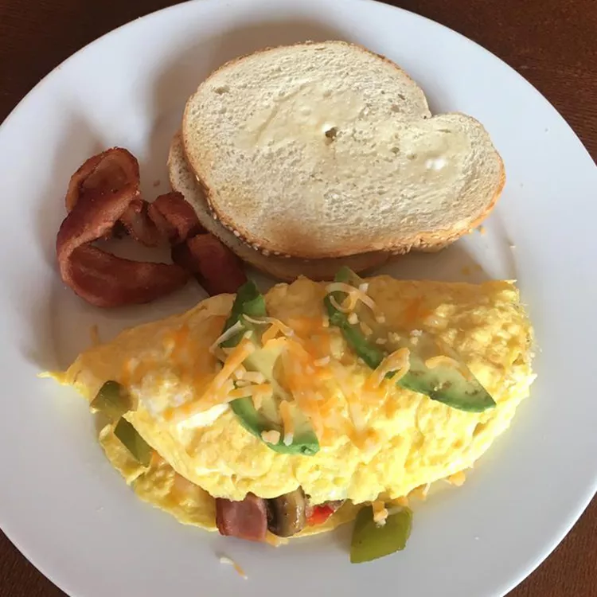

Omelette's Recipe

Description:
Classic folded turkey omelet using leftover
roasted turkey and savory seasoning.
Ingredients:
- 1 tablespoon olive oil
- 2 teaspoons unsalted butter
- 1 tablespoon chopped fresh shiitake mushroom
- 1 shallot, finely chopped
- 1/4 teaspoon salt
- 1 fresh sage leaf, minced
- 1/4 teaspoon crushed red pepper flakes
- 1/4 cup shredded cooked turkey
- 1 teaspoon dry vermouth (Optional)
- 2 eggs, chilled
- 1 pinch ground white pepper
- 2 teaspoons olive oil
- 1 tablespoon creme fraiche
Steps:
- Heat 1 tablespoon olive oil and butter in a skillet
over medium-low heat. Stir in shiitake mushroom,
shallot, salt, sage, and red pepper flakes. Cook and
stir until shallot is translucent, about 5 minutes.
Mix in turkey and vermouth; stir until heated through,
1 to 2 minutes. Remove the skillet from heat.
- Beat eggs with a fork in a bowl until well blended;
season with a pinch of salt and white pepper.
- Heat 2 teaspoons olive oil in an omelet pan over
medium heat until hot. Pour beaten eggs into the pan.
Use a spatula to gently stir eggs just until they
begin to set, 1 to 2 minutes; shake the pan to cover
the bottom completely with egg. Smooth the top of
partially set eggs with the spatula; cook until
the bottom is firm and the top is still slightly soft,
then turn off heat.
- Spoon turkey mixture into the center of omelet,
filling about the middle 1/3 of the omelet; dot with
small dollops of crème fraiche. Do not overfill omelet.
With the spatula, fold the upper 1/3 of the omelet
over filling. Gently tip the skillet and shake
omelet towards the edge of the skillet. With the
spatula, fold omelet over one more time, forming a
loose cigar shape. Gently tip omelet onto a serving
plate.